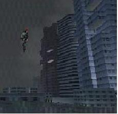
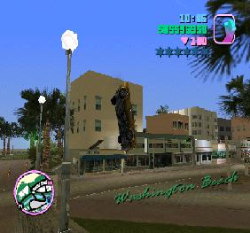

Vice City
 De: La Frikipedia, la enciclopedia extremadamente seria.
De: La Frikipedia, la enciclopedia extremadamente seria.
Este artículo trata sobre la ciudad. Para el juego, véase GTA Vice City.
Vice City es la ciudad donde transcurre la acción del juego GTA Vice City (Geteá Vaisiti para los canis) cuyo señor supremo es el conocido nadador Tommy Vercetti, aunque parece que un tal Victor Vance le pretende hacer la competencia con este otro juego.
Barrios de la ciudad
 Típica acrobacia friki con una moto, en un salto de 200 metros de alto.
 Conducción muy normal por las calles de Vice City.¡Pincha encima, vamos!
- Downtown: es famoso por el estadio y por el Ammu-Nation; la tienda perfecta para ir de compras con la familia donde lo menos peligroso que te venden es una escopeta de combate. También es conocido por ser el distrito por excelencia de los moteros horteras, los rascacielos y de la venta de
drogas cosas del hogar.
- Little Haití; Muy recomendable, en especial si vas de turista. Entre sus calles puedes encontrar chabolas y demás tipos de viviendas prefabricadas, asi como una banda juveníl que dicen que es de delincuentes pero que en realidad tienen un corazoncito encantador. Si te disparan por la calle, no te sientas incómodo o preocupado, es su forma de saludarte.
- Little Habana: Lamisma mierda que lo anterior sólo que en vez de venir de Haiti, los colegas estos vienen de Cuba. ¡Tócate los huevos!, seguro que llegaron en una patera.Son muy peligrosos e indeseables también.
- Escobar International Airport: Así es amigos, los
frikis alcohólicos creadores del juego son fans de nuestro Manolo, very tipical spanish, por lo que le dieron el nombre al aeropuerto. (Ya sé que te lo estás preguntando,:no, no encontrarás su carro)
- Prawn Island: Aquí sólo encontrarás unos estudios de cine y una chabola grande en ruinas, y ya ta.
- Leaf Links: (en cristiano, Enlaces de Lefa) Campo de golf que ocupa toda la isleta, donde debes ir en una misión a cargarte a un pajarito que canto demasiado...
- Starfish Island: Isla tipo la Moraleja donde Tommy tiene su mansión que destaca especialmente por el laberinto del jardín y por el helicóptero del tejado.
- Vice Point: Barrio residencial corriente y moliente donde podrás atracar multitud de tiendas.
- Washington Beach: Destaca por su avenida costera. Esta lleno de rampas donde hacer gilipolleces y chuminadas varias.
- Ocean Beach: Aquí sólo hay gilipolleces y es una zona un tanto aburrida. Lo bueno es que las calles son perfectas para huír de los maderos.
Lugares carismáticos de la ciudad
- El hotel, ya que sirve al principio pa guardar la partida (y además es gratis, y no como en la realidad).
- La mansión de Tommy, que cuando la consigues puedes destrozar too el hotel tranquilo.
- El puticlub Pole Position: El nombre es pa despitar a los niños; en este lugar veras miles de putas, y puedes subirte a una barra que esté sola y bailar en ella como si fueras un travelo.
Bueno, eso son los más importantes. Ahora los que no lo son.
- El club Malibú (no me refiero al de la bebida): Aquí puedes menear el esqueleto con unas canciones pasaas de moda, y un par de travelos bailando en el escenario.
- La comisaría: Solo sirve pa salir de ella cuando te atrapen, y pa liberar presidiarios. Y ta ta.
- Los hospitales: Igualico que la comisaria; solo sirve pa salir de ella cuando te maten, y pa robar una ambulancia si lo hay.
- El estadio: Donde se hacen pedacho tonterias en ella.
- Los autos, ya que si te subes en ellos puedes oir musica en la radio. Hay una en la que sale un cubano too loco.
- La armería Ammu-nation: Aqui tienes pa comprar cinco armas; no atraques al dependiente, ya que usará un arma pa joderte.
- La ferretería: Lo mismo que en Ammu-nation, solo que al atracarlo consigues pasta.
- Taller de pintura: Solo sirve pa arreglar el coche y despistar a los polis, y ya ta.
- Los centros comerciales: El unico lugar que mola cantidubi, ya que puedes atracar a los dependientes de las tiendas.
- La tienda de ropa Gash: Una cutreparodia del Zara o del Behrska ese; solo sirve pa atracarla. Se encuentra en el centro comercial.
Datos curiosos de la ciudad y sus habitantes
- Normalmente, cuando vas por una ciudad se ve a los peatones andando tranquilamente a dos por hora, pero...¿Por qué cuando te ven la pipa se ponen a correr "de lao" y luego se ponen de rodillas en medio de la calle? ¿Esque quieren palmarla siendo atropellados?
- También está el típico coche de policía que si te pega un trompazo que te quita la mitad de la vida no pasa nada, pero como lo rozes tienes un delito y 200 patrullas y Chuck Norris siguiéndote por la cuidad y que no paran hasta que pongas el truco de los delitos ("leavemealone"), lo que jode mucho, porque te tienes que ir a toa ostia a un callejón para que no te vean y poner el truco los más rápido que puedas o te arrestan...(el que escribio lo anterior es solo un idiota que no sabe que se pueden poner los trucos en pausa)
¿Porqué en todas las ciudades tiene que haber una banda de mamones clandestinos que como te vean pasar por al lado o les toques sin querer y te agarran estilo Chuck Norris? ¿Es que están pa putear el pedo o qué?
- Todos los policias son iguales, clones con gafas de sol ochenteras y camisas amarillas, una especie de agentes Smith debiluchos.
- A los policias los crean en el juego como los humanos en matrix, en probetas, por eso son ilimitados, además les meten un chip en el cerebro como a terminator el cual les encomienda una única misión "matar a Vic Vance"
- Originalmente el GT Vice City Stories iba a ser llamado "GTA el ataque de los clones" por lo anterior.
- Como es posible que después de haber matado a 7000022334340 civiles y 890088876123123213 policias, sigas estando libre y pagando sobornos por tus armas? no deberían haberte condenado a la silla eléctrica desde el principio?
Misiones jodidas en la ciudad
- Hay una misión (que para llegar hasta ella te dará pa too el santo dia) en la que te haces una persecución de coches con un friki que necesitarás para huir después de un atraco. Entonces va la poli y dice que eso es ilegal y te pone de recompensa dos estrellitas "castras" que te obstaculizan la carrera (pero pa colmo te persiguen solo a ti, y no al otro), ademas de que el friki usa mejor coche que el tuyo, con lo que siempre gana. Jode, ¿verdad? Pos la cosa no acaba aquí, cuando le ganas (que pa eso hay que usar muuuchos trucos), te toca la misión del atraco, que cuando consigues la pasta, el tio te esperaba en la entrada, pero van los polis y se lo cargan, haciendo que conduzcas al final tú el coche. Como podeis comprobar, el puto fumetas ese no no ha servio pa na de na.
- Otra es la de que tienes que proteger a un jefe cubano de los haitianos y eliminarlos (que cuestan lo suyo, no creais) y luego perseguir en moto a uno que le robó la pasta. Cuando lo consigues, te haces de su banda, y a lo largo del juego, te lo cargas porque te aburre de lo tonto que es. Con eso te ganas su mansión con jardín de laberinto y un helicóptero. ¿Que donde está lo follante? Que después de esa misión tan agotadora de proteger al jefe, luego te lo cargas como si le dijeras "a tomar por culo too".
- Otras son de carreritas cronometradas de barcos, de llevar helados o pizzas, de ir de taxista, y otras chorradas más. Joder, una ciudad entera pa liarla y lo unico que se hace son varias tonterias de misiones.
- Otra en la que tienes que rescatar al puto de tu amigo porque lo tienen atrapado y le tienes que salvar la vida y pa colmo despues el loco te traiciona.
- Otra en la cual debes vestirte de poli para eso entras en un garage y luego deben entrar 2 policias... luego el auto de policia queda a la mitad y tienes que entrar al auto y sacarlo del medio... ademas, si se mete uno de mas, luego... desaparece como magia... ademas, luego de que el garage se cierra quedan los
pelotudos policias corriendo contra el garage, levantando la mano como putasos pelotudos... luego vas al centro comercial y te pones en el cafe y te pones en el marcador putaso rosa... y si no sabes cuanto tiempo estalla la bomba, con que tecla correr y el truco "leavemealone" de sin policias te cagas muriendo... y luego de eso... obtienes la mansión... pfff... el premio deberia ser una copia de la pagina de la Frikipedia
- Y también otra en donde debes conducir un avión más viejo que tu suegra, al que se le acaba la gasolina, y cuesta un cojón manejarlo, solo para repartir públicidad para una película pr0n
Sabías que?
Enlaces externos
Autor(es):
- Fordus
- Taser
- Azulejos
- Erazor
- Pablooria
- Plasnisk
- ArreKarallo
- Dark temptation
- Masterarcanum
- Membrillo74
Frikipedia 2005-2016, Licencia
GFDL 1.2 - Extraído por FrikiLeaks